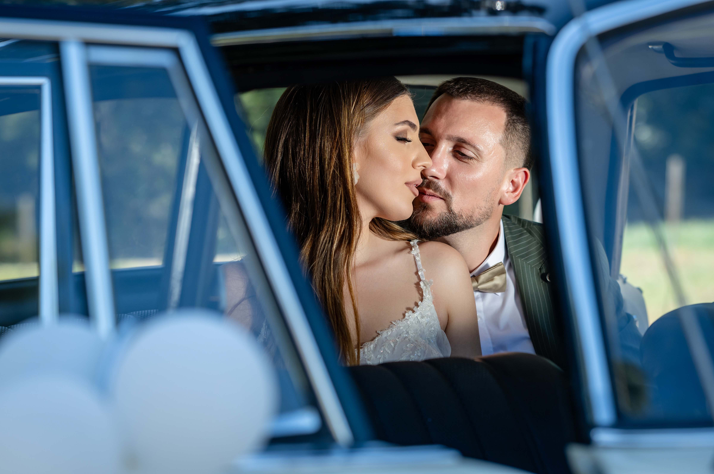
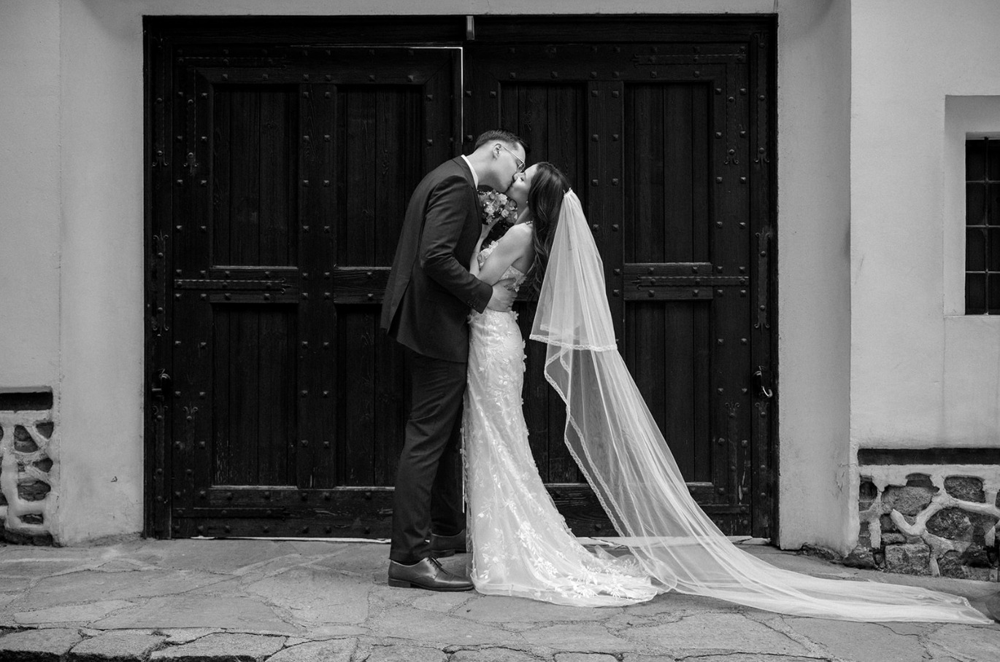
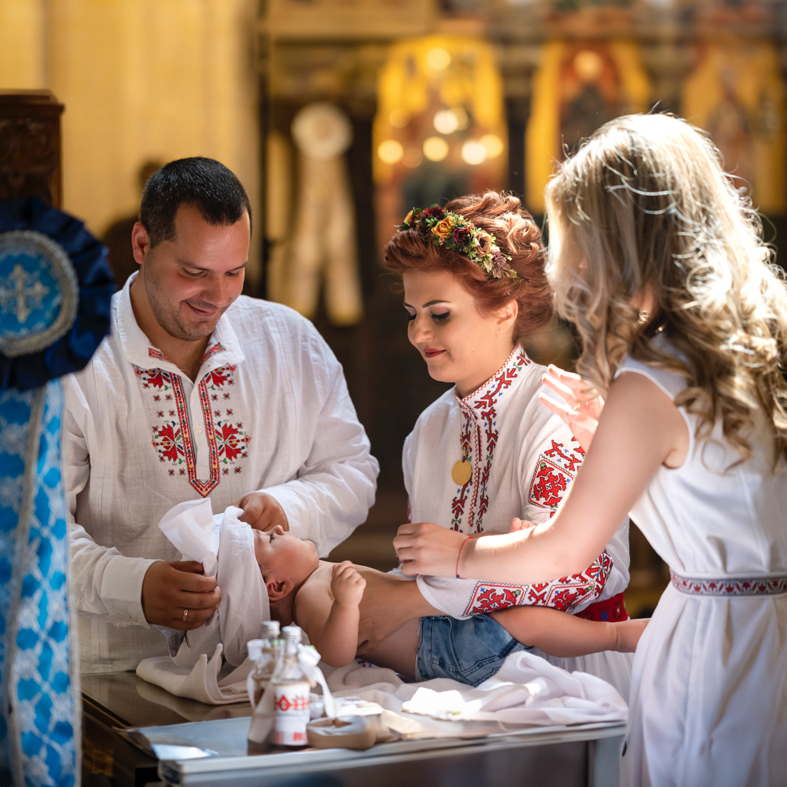

Сватбен фотограф в Пловдив и фотограф за кръщене — над 60 заснети сватби и много детски празници, разказани с внимание към всеки момент.

Като сватбен фотограф в Пловдив, сватбената фотография заема специално място в моята работа. До момента съм заснел над 60 сватби, всяка една различна история за истинска любов и незабравим ден.
Разгледай сватбени истории →
Кръщенето е ден, изпълнен с емоция и семейна топлина. Като фотограф за кръщене в Пловдив, улавям всеки специален момент от тайнството и празненството — от църквата до тържеството.
Разгледай кръщенета →С опит в рекламната, сватбената и семейна фотография в Пловдив. Зад гърба си имам успешни кампании, заснети в Италия, Швейцария и България, както и работа с марки като Zarena, La Morelle и Sprint.
Научи повече →